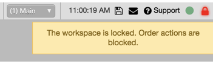

You can lock a workspace to prevent any actions in the workspace, such as submitting an order by accidentally clicking the mouse.
When you lock a workspace, the menu bar icons are hidden, and any clicking or typing displays a Screen Locked message. To lock an entire workspace, click the  icon in the menu bar and select Lock all.
icon in the menu bar and select Lock all.

To lock order entry, but still allow other activity in the workspace, click the  icon in the menu bar and select Lock order entry only. The workspace functions normally, but if you try to enter an order or accidentally click an order entry button when selecting or moving widgets, the workspace displays the following message.
icon in the menu bar and select Lock order entry only. The workspace functions normally, but if you try to enter an order or accidentally click an order entry button when selecting or moving widgets, the workspace displays the following message.

To unlock a workspace, click the icon in the menu bar of a locked workspace. You can also unlock the workspace by refreshing the workspace with the keyboard shortcut, Ctrl-R.